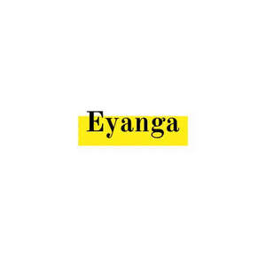

Trade Mark Journal No.2025/044 31 October 2025
UK00004280439 20 October 2025 (35)

International priority date claimed: 2 September 2025
(Nigeria)
(NG/TM/O/2025/38)
- Class 35
- Business management of wholesale and retail outlets; Business management of retail outlets; Retail store services in the field of clothing; Administration of the business affairs of retail stores; Online retail store services in relation to clothing; Online retail store services relating to clothing; Retail services in relation to footwear; Retail services in relation to jewellery; Retail services in relation to furnishings; Retail services in relation to furniture; Retail services in relation to clothing; Shop retail services connected with carpets; Retail services in relation to smartphones; Retail services in relation to smartwatches; Retail services relating to jewelry; Retail services in relation to downloadable virtual footwear; Retail services in relation to coffee; Retail services in relation to chocolate; Retail services in relation to lighting; Retail services relating to furniture; Retail services in relation to toys; Online retail services relating to jewelry; Management of a retail enterprise for others; Retail services relating to bakery products; Online retail services for downloadable virtual clothing; Retail services in relation to cocoa; Retail services connected with stationery; Online retail services relating to cosmetics; Retail services in relation to yarns; Retail services relating to candy; Retail services relating to clothing; Retail services in relation to horticulture products; Retail services in relation to cookware; Retail services in relation to bags; Retail services in relation to fashion accessories; Business management of wholesale outlets; Retail services in relation to games; Retail services in relation to downloadable virtual clothing; Online retail services in relation to downloadable virtual footwear; Online retail services relating to toys; Retail services in relation to fabrics; Retail services in relation to tableware; Online retail services relating to handbags; Retail services in relation to clothing accessories; Retail services relating to horticultural products; Retail services in relation to pushchairs; Online retail services in relation to downloadable virtual clothing; Retail services in relation to wearable computers; Mail order retail services for clothing; Retail services in relation to downloadable virtual handbags; Retail services in relation to bicycle accessories; Retail services in relation to floor coverings; Retail services in relation to car accessories; Online retail services in relation to downloadable virtual headwear; Retail services in relation to stationery supplies; Retail services in relation to physical therapy equipment; Retail services in relation to luggage; Retail services in relation to teas; Online retail services for downloadable digital music; Online retail services relating to luggage; Mail order retail services for clothing accessories; Arranging promotion of charitable fundraising events; Organization of events, exhibitions, fairs and shows for commercial, promotional and advertising purposes; Arranging and conducting of promotional events; Organisation of exhibitions and events for commercial or advertising purposes; Fashion show exhibitions for commercial purposes; Fashion shows for promotional purposes (Organization of -); Organization of fashion shows for promotional purposes; Organization of fashion parades for sales promotion purposes; Organisation of fashion shows for commercial purposes; Promotion of special events; Promoting the sale of fashion goods through promotional articles in magazines; Promoting philanthropic services; Development of business organization strategies relating to corporate social responsibility; Business consultancy services relating to the marketing of fund raising campaigns; Promoting humanitarian activities; Advertising services to promote public awareness in the field of social welfare; Business consultancy services relating to the promotion of fund raising campaigns; Business organization advice; Business management and enterprise organization consultancy; Business organization consultancy; Business organization consulting; Advertising services to promote public awareness of environmental issues and initiatives; Advertising; Advertising and marketing; Advertising and advertisement services; Advertising and publicity; Promotional advertising services; Online advertising; Leasing of advertising billboards; Promotion [advertising] of travel; Providing academic course administration services relating to online course registration; Advertising in the field of tourism and travel; Administration of cultural and educational exchange programs; Organisation of exhibitions for business or commerce.
Eyanga Limited